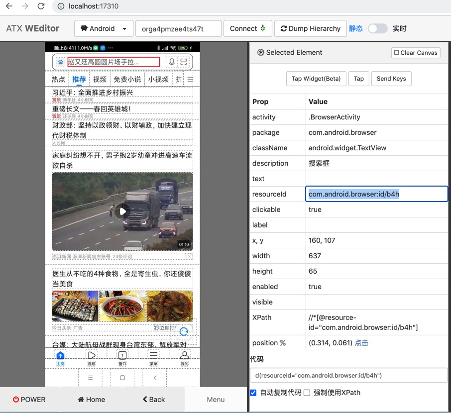

举例：定位小米手机中内置浏览器中的输入框和获取属性值
下面举例来介绍：
页面
对于安卓手机小米Note10X其中内置的浏览器的首页中顶部的输入框：
搞清楚元素属性
通过多种调试：
借助weditor调试页面，看元素属性

拷贝出全部属性：
Selected Element
Prop Value
activity .BrowserActivity
package com.android.browser
className android.widget.TextView
description 搜索框
text
resourceId com.android.browser:id/b4h
clickable true
label
x, y 160, 107
width 637
height 65
enabled true
visible
XPath //*[@resource-id="com.android.browser:id/b4h"]
position (0.532, 0.057) 点击
代码 d(resourceId="com.android.browser:id/b4h")
用代码dump_hierarchy输出整页的xml中找到对应元素的部分
curPageXml = d.dump_hierarchy(compressed=False, pretty=False)
输出的页面xml源码中，有对应该元素的部分
<node index="1" text="" resource-id="com.android.browser:id/b4h" class="android.widget.TextView" package="com.android.browser" content-desc="搜索框" checkable="false" checked="false" clickable="true" enabled="true" focusable="false" focused="false" scrollable="false" long-clickable="false" password="false" selected="false" visible-to-user="true" bounds="[160,107][797,172]" />
都可得知对应属性是：
package:com.android.browserclass:android.widget.TextViewresource-id:com.android.browser:id/b4hcontent-desc:搜索框- ...
查找（定位）元素
此处去查找定位该元素的逻辑就是：
class="android.widget.TextView"+resource-id="com.android.browser:id/b4h"- 注：如果确定
resource id的值是唯一的，则也可以只用：resource-id="com.android.browser:id/b4h"
- 注：如果确定
对应代码是：
用driver(propertyParameter)去查找元素
inputUiObj = d(resourceId="com.android.browser:id/b4h", className="android.widget.TextView")
或
inputUiObj = d(resourceId="com.android.browser:id/b4h")
注：其他属性对应的参数还有：
text,textContains,textMatches,textStartsWithclassName,classNameMatchesdescription,descriptionContains,descriptionMatches,descriptionStartsWithcheckable,checked,clickable,longClickablescrollable,enabled,focusable,focused,selectedpackageName,packageNameMatchesresourceId,resourceIdMatchesindex,instance
去找到元素。
关于返回元素的类型，可以通过
print("type(inputUiObj)=%s" % type(inputUiObj))得知是：
<class 'uiautomator2.session.UiObject'>
想要继续获取元素属性，则可以通过info
inputUiObjectInfo = inputUiObj.info
关于
info的类型，可以通过print("type(inputUiObjectInfo)=%s" % type(inputUiObjectInfo))得知是：
<class 'dict'>
打印出的info的值是：
inputUiObjectInfo={'bounds': {'bottom': 172, 'left': 160, 'right': 797, 'top': 107}, 'childCount': 0, 'className': 'android.widget.TextView', 'contentDescription': '搜索框', 'packageName': 'com.android.browser', 'resourceName': 'com.android.browser:id/b4h', 'text': '', 'visibleBounds': {'bottom': 172, 'left': 160, 'right': 797, 'top': 107}, 'checkable': False, 'checked': False, 'clickable': True, 'enabled': True, 'focusable': False, 'focused': False, 'longClickable': False, 'scrollable': False, 'selected': False}
附上完整代码：
# Method 1: use driver pass in parameter
inputUiObj = d(resourceId="com.android.browser:id/b4h", className="android.widget.TextView")
# inputUiObj = d(resourceId="com.android.browser:id/b4h")
print("type(inputUiObj)=%s" % type(inputUiObj)) # type(inputUiObj)=<class 'uiautomator2.session.UiObject'>
print("inputUiObj=%s" % inputUiObj) # inputUiObj=<uiautomator2.session.UiObject object at 0x10a0bea00>
inputUiObjectInfo = inputUiObj.info
print("type(inputUiObjectInfo)=%s" % type(inputUiObjectInfo)) # type(inputUiObjectInfo)=<class 'dict'>
print("inputUiObjectInfo=%s" % inputUiObjectInfo) # inputUiObjectInfo={'bounds': {'bottom': 172, 'left': 160, 'right': 797, 'top': 107}, 'childCount': 0, 'className': 'android.widget.TextView', 'contentDescription': '搜索框', 'packageName': 'com.android.browser', 'resourceName': 'com.android.browser:id/b4h', 'text': '', 'visibleBounds': {'bottom': 172, 'left': 160, 'right': 797, 'top': 107}, 'checkable': False, 'checked': False, 'clickable': True, 'enabled': True, 'focusable': False, 'focused': False, 'longClickable': False, 'scrollable': False, 'selected': False}
isFoundInput = inputUiObj.exists # True
用driver.xpath(xpathSelector)去查找元素
inputXpathSelector = d.xpath("//android.widget.TextView[@resource-id='com.android.browser:id/b4h']")
或：
inputXpathSelector = d.xpath("//*[@resource-id='com.android.browser:id/b4h']")
找到元素。
关于
xpath返回的类型，可以通过print("type(inputXpathSelector)=%s" % type(inputXpathSelector))得知是：
<class 'uiautomator2.xpath.XPathSelector'>
想要获取属性值，此处要先去得到XPathSelector对应的XML元素
inputXpathElem = inputXpathSelector.get()
关于
get()返回的类型，可以通过print("type(inputXpathElem)=%s" % type(inputXpathElem))得知是：
<class 'uiautomator2.xpath.XMLElement'>
然后才能去用inputXpathElem.attrib获取属性值
关于
attrib的类型，可以通过print("type(inputXpathElem.attrib)=%s" % type(inputXpathElem.attrib))得知是：
<class 'lxml.etree._Attrib'>
打印出的dict类型的inputXpathElem.attrib值是：
inputXpathElem.attrib={'index': '1', 'text': '', 'resource-id': 'com.android.browser:id/b4h', 'package': 'com.android.browser', 'content-desc': '搜索框', 'checkable': 'false', 'checked': 'false', 'clickable': 'true', 'enabled': 'true', 'focusable': 'false', 'focused': 'false', 'scrollable': 'false', 'long-clickable': 'false', 'password': 'false', 'selected': 'false', 'visible-to-user': 'true', 'bounds': '[160,107][797,172]'}
附上完整代码：
# Method 2: use xpath
inputXpathSelector = d.xpath("//android.widget.TextView[@resource-id='com.android.browser:id/b4h']")
# inputXpathSelector = d.xpath("//*[@resource-id='com.android.browser:id/b4h']")
print("type(inputXpathSelector)=%s" % type(inputXpathSelector)) # type(inputXpathSelector)=<class 'uiautomator2.xpath.XPathSelector'>
inputXpathElem = inputXpathSelector.get()
print("type(inputXpathElem)=%s" % type(inputXpathElem)) # type(inputXpathElem)=<class 'uiautomator2.xpath.XMLElement'>
print("inputXpathElem=%s" % inputXpathElem) # inputXpathElem=<uiautomator2.xpath.XMLElement object at 0x108585d30>
print("type(inputXpathElem.attrib)=%s" % type(inputXpathElem.attrib)) # type(inputXpathElem.attrib)=<class 'lxml.etree._Attrib'>
print("inputXpathElem.attrib=%s" % inputXpathElem.attrib) # inputXpathElem.attrib={'index': '1', 'text': '', 'resource-id': 'com.android.browser:id/b4h', 'package': 'com.android.browser', 'content-desc': '搜索框', 'checkable': 'false', 'checked': 'false', 'clickable': 'true', 'enabled': 'true', 'focusable': 'false', 'focused': 'false', 'scrollable': 'false', 'long-clickable': 'false', 'password': 'false', 'selected': 'false', 'visible-to-user': 'true', 'bounds': '[160,107][797,172]'}
isFoundInput = inputXpathSelector.exists # True